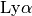
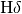
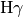
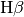
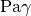
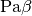
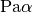
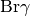
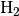

8. The ODF window¶
{kind=link}
Fig. 8.1 Visualizing the mask design. Left: The ODF window shows a table with the objects that have been placed in the mask. It also offers some visualization options. The text window offers information about acquisition stars and parameters for the phase II definition in the Observing Tool. The image window on the right displays the objects and spectra in this mask.
8.1. Loading an ODF¶
To load a mask, select GMMPS -> Load Object Definition File (ODF *.fits). The ODF window looks similar to the OT window and is distinguished by a blue menu bar. A single mask can be visualized at a time. If the ODF FITS has changed (e.g. you manually edited it outside GMMPS), then the ODF window can be updated using the Reload ODF button.
For internal purposes, GMMPS also creates ASCII versions of the ODFs, recognized by their suffix (.cat). They can also be loaded: GMMPS -> Load Object Definition File (ODF *.cat); however, you should avoid doing this:
Warning
In GMMPS, you may modify the ODF table and visualize the effects on the mask design. However, you cannot store these modifications. Any changes you want to make to the ODF (removing objects, changing slit lengths, …) must be done to the OT, and then you recreate the ODF. Alternatively, the ODF may be edited directly using an external FITS table editor, and visualized again in GMMPS to verify the validity of the changes (e.g. no slit overlaps etc.).
You must submit the ODF FITS to Gemini. Changes you make to the ASCII file, in case you have loaded it, will not be reflected in the FITS file.
8.2. Display Options¶
Various overlays may be toggled on/off in the image window:
Objects: Displays the objects in the ODF. They are plotted based on their (RA,DEC) coordinates. If you want to select an object in the image window, this option must be ON. Priorities are represented by different symbols.
Slits and spectra: Displays the slits (yellow), the spectral footprints (gray), as well as general information about the mask design and phase II Observing Tool parameters. You may need to toggle this option off/on to update the display.
Shading: Toggles on/off the shading of the spectral boxes.
Wavelengths: Toggles on/off the wavelength grids. For F2, the wavelength grid is based on the linear grism dispersion factor and should be accurate to within 30 nm. For GMOS, the wavelength grid is based on extensive fully nonlinear models of the spectrograph and accurate to within about one nm (smaller than the gap diameter). The wavelength intervals cut out by the GMOS detector gaps are also displayed for each spectrum. The CWL is shown as a red line connected to the object. Anamorphism offsets the CWL with respect to the slit positions.
Order overlap: Displays any order overlap that occurs for the configuration of this mask design. This includes 2nd order overlap for all GMOS gratings used in first order mode. For the R831 used in 2nd order mode (the only grating GMMPS allows to use in 2nd order mode), overlap by the first order will be shown. In case the R150 grating is used, the zero-th order position will be shown. Order overlap is not available for F2: First, it uses grisms and thus the order positions are not straight forward to calculate. Second, F2 uses fixed grism positions and thus there is nothing you can do about the (negligible) order overlap.
Grayscale: Toggles between a grayscale image and the native Skycat color scheme.
Highlight acq stars: Only the acquisition stars are shown for easier mask checking.
Slit placement area: A cyan polygon indicating where slits may be placed. This area is smaller than the detector array. Its size and shape is determined by the opto-mechanical design of the instrument and (in case of GMOS) by the bar code stuck to the mask.
Pointing center: This corresponds to the (RA, DEC) you must specify in the phase II observations (corresponding to your pre-imaging data). Actually, what is plotted are the CRPIX1/2 coordinates in case of pre-imaging, and the image center in case of a pseudo-image (which may have its CRPIX1/2 at wildly different locations).
CWL: Allows you to find an optimal value for the CWL, repositioning the spectra on the detector array. For example, you can fine-tune the CWL to avoid some emission line getting lost in the detector gaps, or if you rather have the blue than the red ends of the spectra truncated by the detector boundaries. The CWL must be entered in the Observing Tool. Changing the CWL is safe, it does not compromise the mask design. The blue redo arrow to the right will restore the setting for which the mask was created. Switch on the wavelength overlay to fully exploit this capability.
Show other wavelengths [nm] / redshift: Takes a blank-separated list of user-defined wavelengths and / or atomic identifiers. The wavelengths will be displayed using a cyan color. If the ODF table contains individual redshifts, then the lines will be redshifted accordingly. If a redshift is entered in the explicit “redshift” field, then that redshift will override the individual redshifts in the ODF table. The following atomic identifiers are available:
Identifier Expands into the following transition wavelengths He HeII 164.0, HeII 320.4, HeI 389.0, HeII 468.7, HeII 541.3, HeI 587.7, HeI 668.0, HeI 1083, HeI 2058 H  121.6,  410.3,  434.3,  486.4, 656.5,  1094,  1282,  1875,  2166,  1-0 2122, 2-1 2248 O OVI 103.2, OVI 103.8, [OII] 372.7, [OIII] 436.3, [OIII] 496.0, [OIII] 500.8, [OI] 630.2, [OI] 636.6, [OII] 732.1 N [NII] 655.0, [NII] 658.6 C CIII 97.7, CIV 154.9, CII] 232.6 Ar [ArIII] 713.8 S [SII] 406.9, [SII] 407.6, SII 520.3, [SII] 671.8, [SII] 673.3, [SIII] 907.1, [SIII] 953.3 Na D2 589.0, D1 589.6 Ne [NeIV] 242.4, [NeV] 334.7, [NeV] 342.7, [NeIII] 386.9, [NeIII] 396.8 Ca CaH 393.4, CaK 396.9, CaT1 849.9, CaT2 854.2, CaT3 866.2 Mg [MgII] 279.9, Mgb 516.7, Mgb 517.3, Mgb 518.4
8.3. Examples¶
{kind=link}
Fig. 8.2 Highlighting the acquisition stars. This option allows to quickly assess the acquisition stars, suppressing the spectral footprints of the science targets. If an acquisition star is found within 4.0” of a detector gap or the boundary of the slit placement area, then it will be colored yellow.
{kind=link}
Fig. 8.3 A wavelength grid can be overlaid over each of the spectra, including the wavelength intervals masked by the detector gaps. This is accurate to within about a nm. The gap wavelengths are rounded to the nearest integer. In this example, the position of the [SII]673.3 nm line is also overplotted, using the “Show other wavelengths” option.

Fig. 8.4 Overlapping orders occurring for the (fixed) grating / filter combination can be overlaid (orange shaded areas to the left). A red warning will also be shown in the white message window (see the Fig. below).
{kind=link}
Fig. 8.5 CWL choice. Top: A GMOS mask design using the R400 with an r-band filter and CWL = 550 nm. The filter cuts out a relatively small spectral range, so that two spectral banks fit next to each other in dispersion direction. However, the CWL is too blue for the grating / filter choice, pushing all spectra toward the left (red) end of the detector array. Bottom: Same setup, but with CWL = 635 nm, chosen automatically by GMMPS. The spectral banks are optimally placed on the detector.
{kind=link}
Fig. 8.6 Storage bands (yellow) in a band-shuffle mask have equal height and appear at regularly spaced intervals. Storage bands are always displayed for bandshuffling masks, and do not contain any slits.
{kind=link}
Fig. 8.7 In a micro-shuffling mask, each object has its own adjacent storage bands (red) above and below. Storage bands can have different heights (because they are shared between objects if overlapping), and are at least as high as the science slits. Contrary to a band-shuffle mask, the storage bands are not regularly spaced. Storage bands are always displayed, and do not contain any slits.
8.4. Observing Tool Setup¶
With the Slits & Spectra checkbox switched on, GMMPS displays important information about the parameters you must use in the Observing Tool when defining the phase II observations. In doing so you avoid errors in the setup and minimize overheads.
{kind=link}
Fig. 8.8 When displaying the spectra in the ODF window, GMMPS will show all relevant parameters for the phase II setup in the Observing Tool. In addition, warnings about acquisition stars and order overlap will be shown.
The parameters displayed for the Observing Tool are:
- RA, DEC (target component)
- Position angle (instrument component)
- Grating/Grism (instrument component)
- Filter (instrument component)
- CWL (instrument component; GMOS only)
- N&S Offset (detector rows) (instrument component; GMOS Nod & Shuffle masks only)
If you enter different values for RA, DEC and the position angle, then the acquisition process will involve more iterations to align the mask on sky. If you deviate too much, then it could become impossible for us to acquire your mask, and the time lost will be charged to your program. A future version of the Observing Tool will cross-check the information in the submitted ODFs with the phase II setup. The only exception is the CWL setting, which may be changed freely within the limitations of the grating and filter chosen. A change in CWL is immediately shown as a displacement of the spectral banks. Use this to optimize your phase II.
8.5. ODF summary file¶
GMMPS creates a summary file for each loaded and displayed ODF. It is called
<ODF_file_name>_summary.txt
and contains the complete information about the Observing Tool setup as well as other characteristic parameters. Therefore, it is not necessary to load the ODF into GMMPS to access this information.
After a mask has been cut and installed in the instrument, a mask image is being taken and analyzed to verify its integrity. At the end of the summary file further information is shown that helps Gemini staff to interpret the images. This information can be ignored by PIs.
An example ODF summary file is displayed below.
Band-shuffling mask:
Shuffle dist. = 500 [unbinned pixel]
Band size = 500 [unbinned pixel]
y offset = 180 [unbinned pixel]
Number of good acquisition stars: 4
OT setup:
Target RA = 359.73382
Target Dec = -55.42539
Pos. angle = 347.1
Grating = R400
Filter = r
CWL = 635
N&S Offset = 500 (detector rows)
Other parameters:
Spectral range = 548.8 - 721.1 nm
Lin. dispersion = 0.1511 nm/pixel
Comments for interpreting mask images (PIs ignore please):
Slit 39: close to, partially or fully hidden by detector gap.
Slit 127: possibly on top of amplifier boundary.